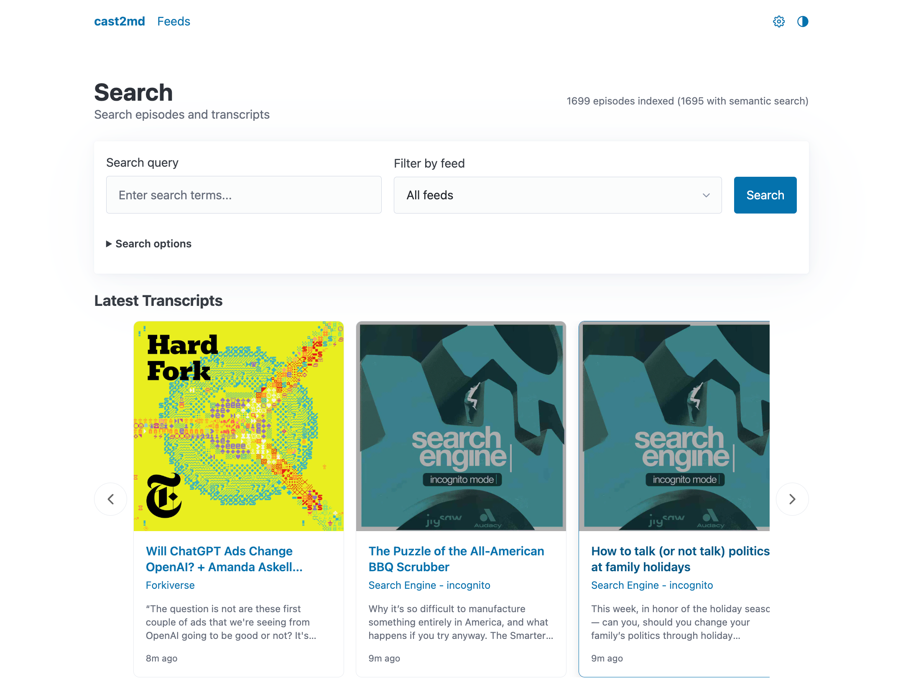

cast2md¶
Turn podcast RSS feeds into a searchable, LLM-ready transcript library. Automatically fetches existing transcripts from publishers and Pocket Casts, or transcribes locally with Whisper. Search across everything, or chat with your podcasts via MCP.

Features¶
-
RSS Feed Management
Add podcast feeds via RSS or Apple Podcasts URLs. Automatic episode discovery and polling.
-
Chat with Your Podcasts
Ask questions, summarize episodes, and explore topics across your library. Claude integration via Model Context Protocol.
-
Hybrid Search
Full-text and semantic search across episode metadata and transcript content with pgvector.
-
Transcript-First Workflow
Fetches transcripts from Podcasting 2.0 tags and Pocket Casts before downloading audio for Whisper.
-
Whisper Transcription
Local transcription with faster-whisper or mlx-whisper. Supports CPU, CUDA, and Apple Silicon.
-
Distributed Transcription
Use remote machines (M4 Macs, GPU PCs, RunPod) to transcribe in parallel.
-
REST API
Full API for automation and integration with other tools.
Quick Start¶
See the Installation Guide for full details.
Personal Project
This is a personal project under active development. I'm sharing it in case others find it useful, but I'm not currently providing support or reviewing pull requests.
Documentation¶
| Section | Description |
|---|---|
| Getting Started | What cast2md does and how it works |
| Installation | Docker, manual install, and node setup |
| Configuration | Environment variables and settings |
| Usage | Search and feed management |
| Administration | Status monitoring, settings, queue, CLI, API, and MCP |
| Features | Architecture, transcript sources, search, episode states |
| Distributed Transcription | Multi-machine setup and RunPod GPU workers |
| Deployment | Production deployment and server sizing |
| Development | Dev setup, testing, and UI guidelines |